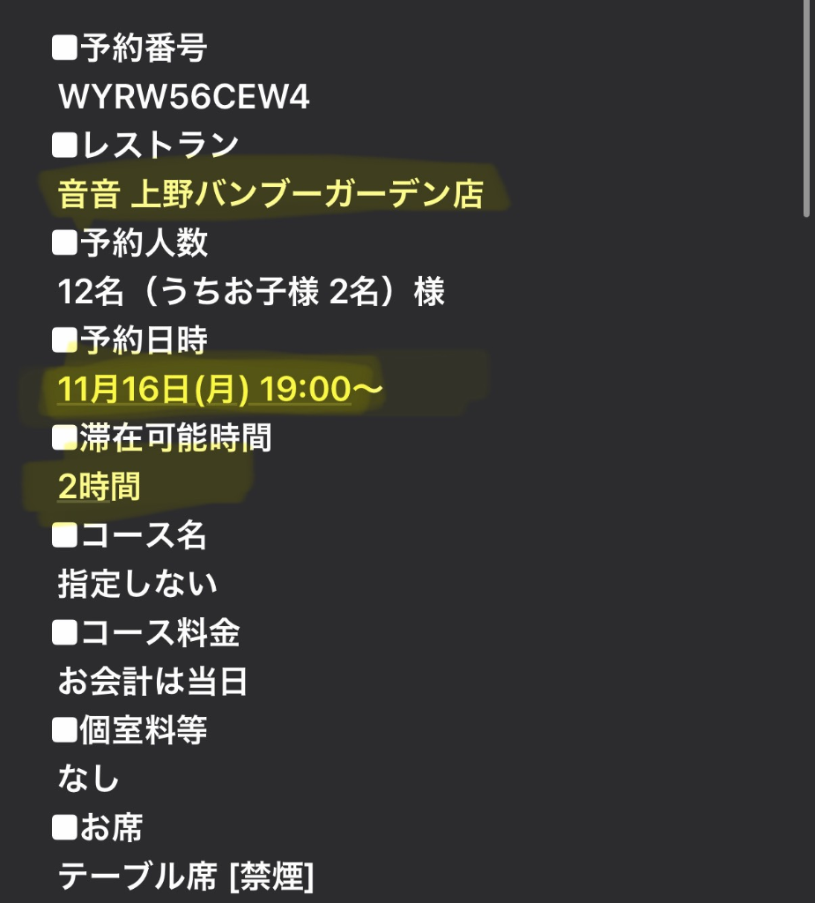

怡惠抵達 15:55（第1航廈）
• 套餐費用：7份 ¥6,000 コース（共 ¥42,000，2位小孩不計費）
• 餐點內容：1位素食（沒有鍋）、6位正常食（有もつ鍋 牛腸鍋）
• 備註：吃不夠可以現場加點
• 集合／乘車地點：東京駅丸の内南口（18:30 出發，約 20:50 返抵）
• 行程亮點：車窗夜景（國會議事堂、六本木、彩虹大橋、銀座）＋ 東京鐵塔下車登 Main Deck 主瞭望台
• 參加人數：12名（大人10名、兒童1名、幼兒1名佔位）／ 總金額：¥38,640
• ⚠️ 注意：露天敞篷巴士夜間行車風大偏冷，務必做好保暖；車上除有蓋飲料外禁食，禁止撐傘與自拍棒
📱 點擊展開預約憑證截圖
• 人數：12名（大人10名、兒童2名）／ 桌席［禁煙］／ 限2小時
• 備註：素食可提前告知店家變更餐點
📱 點擊展開訂位截圖（到店出示）

11/14 はとバス（Hato Bus）觀光巴士費用
| 大人（10名） | ¥3,600 / 人 ＝ ¥36,000 |
| 小人（1名） | ¥1,940 |
| 幼児（席有 1名） | ¥700 |
| 合計料金 | ¥38,640（税込）（共 12 名） |
| 乘車時間地點 | 2026/11/14(土) 18:30 出發，東京駅丸の内南口 |
河口湖包車費用
| 總價 | NT$40,000 |
| 已付訂金 | NT$6,000 |
| 尾款 | NT$34,000（約 ¥169,000） |
| 付款時間 | 尾款於第一天（11/15）先付給司機 |
11/15 住宿資訊
| 3人房（富士山景） | ¥95,040 |
| 4人房 | ¥55,723 |
| 2人房（湖景） | ¥47,520 |
航班資訊
| 楚詒 | 桃園出發，抵達時間 14:20（成田第 2 航廈） |
| 怡惠 | 高雄出發，抵達時間 15:55（成田第 1 航廈） |
回程（11/18 三）
| 怡惠 | 回台灣，起飛時間 12:25（成田第 1 航廈） |
| 楚詒 | 回台灣，起飛時間 20:10（成田第 2 航廈） |
餐廳訂位資訊
| 預約時間 | 11月13日(金) 19:00～ |
| 預約人數 | 9位（大人7位、小孩2位不算錢） |
| 座位類型 | 個室（獨立包廂） |
| 套餐／費用 | 7份 ¥6,000 コース（2位小孩不計費，吃不夠可現場加點） |
| 餐點安排 | 1位素食（沒有鍋）、6位正常食（有もつ鍋） |
| 店家連結 | Google 地圖 |
| 予約番号 | WYRW56CEW4 |
| 預約時間 | 11月16日(月) 19:00～（滯在可能時間 2時間） |
| 預約人數 | 12名（うちお子様 2名）樣 |
| 座位／吸菸 | テーブル席［禁煙］（無包廂費） |
| 套餐／費用 | 指定なし（現場點餐，お会計は当日） |
| 店家地址 | 東京都台東區上野公園1-52 上野バンブーガーデン 2F（Google 地圖） |
11/14（六）はとバス 露天巴士預約與乘車須知
| コース番号 | B1314 |
| 出發日期時間 | 2026年11月14日(土) 18:30 出發（約 20:50 返抵，全程約 2 小時 20 分鐘） |
| 集合／乘車地點 | 東京駅丸の内南口（はとバスターミナル） |
| 預約人數 | 12名（大人10名、小人1名、幼兒1名佔位） |
| 合計料金 | ¥38,640（税込） |
| 行程特色路線 | 東京站丸之內南口 ➡️ 國會議事堂 ➡️ 青山通 ➡️ 六本木（車窗夜景）➡️ 東京鐵塔（下車登上 Main Deck 主瞭望台賞夜景）➡️ 彩虹大橋 ➡️ 台場 ➡️ 銀座（車窗夜景）➡️ 返回東京站 |
⚠️ 乘車注意事項（官方規定）
- 防寒保暖：本行程使用無車頂之敞篷雙層巴士，11月中旬夜晚行駛風大體感溫度低，請務必準備防風外套、毛帽或圍巾等保暖衣物。
- 雨天應對：雨天時可能會拉起車輛防水篷（幌）行駛；若遇惡劣暴風雨天候（荒天），可能取消或停駛。
- 車上禁傘與自拍棒：乘車行駛中嚴格禁止撐傘（含折傘、陽傘）及使用自拍棒攝影。
- 飲食限制：車內僅允許攜帶附蓋寶特瓶、附蓋罐裝飲料、水壺飲用，除飲料外禁止進食任何食物。
- 座位安排：巴士座位為當天現場安排，奇數同行者原則上需與其他乘客併座；車內請保持安靜避免喧嘩。
- 幼兒乘車：6歲以下未滿幼兒若由大人抱於膝上不佔位免票；本行程已為幼兒購買佔位票（¥700）。
11/17（二）上午景點方案比較（下午接銀座購物）
| 景點方案 | 出發車程 | 建議停留與長輩特色 | 午餐用餐建議 | 怎麼到銀座（交通） |
|---|---|---|---|---|
| 小石川後樂園 🌟 | 約 15 分鐘（JR/地鐵） | 約 1 ~ 1.5 小時 • 東京頂級賞楓名所、圓月橋湖景 • 步道平緩好走（約45分繞一圈，體力負擔低） |
• 東京巨蛋城周邊和食/敘敘苑 • 或直接前往銀座各大百貨餐廳 |
丸之內線（後樂園站 ➡️ 銀座站） 直達免轉車，約 12～14 分鐘 |
| 濱離宮恩賜庭園 🌟 | 約 15 分鐘（JR/地鐵至新橋/汐留） | 約 1 ~ 1.5 小時 • 將軍御用大名庭園、潮入之池 • 中島水上茶屋（榻榻米喝熱抹茶+和菓子） |
• 汐留 Caretta 景觀餐廳 • 或直接前往銀座各大百貨享用午餐 |
步行 / 計程車 / 地鐵 • 計程車約 5 分鐘（長輩最省力） • 大手門步行約 12 分鐘 • 新橋站搭銀座線 1 站（2分鐘） |
| 築地場外市場 | 約 12 分鐘（日比谷線直達築地站） | 約 1.5 ~ 2 小時 • 傳統早市邊走邊吃（玉子燒、烤干貝、海鮮、水果） • 採買日本乾貨、昆布、陶器雜貨 |
• 築地海鮮丼/壽司名店（すしざんまい、築地虎杖） • 或吃完點心後至銀座吃午餐 |
步行 / 地鐵 / 計程車 • 晴海通直走步行約 10～12 分鐘 • 日比谷線（築地站 ➡️ 銀座站）2站約 3 分鐘 • 計程車約 5 分鐘 |
| 六義園 | 約 10 分鐘（JR山手線直達駒込站） | 約 1 ~ 1.5 小時 • 江戶兩大名園、東京紅葉代表景觀 • 吹上茶屋（池畔露天茶席喝抹茶賞楓） |
• 駒込周邊和食定食 • 或搭車前往銀座/有樂町周邊用餐 |
南北線 / JR山手線 • 南北線（駒込站 ➡️ 銀座一丁目站）約 15 分鐘直達 • JR山手線直達有樂町站（步行即達銀座） |
| 新宿御苑 | 約 20 分鐘（JR/地鐵至新宿御苑前站） | 約 1.5 小時 • 皇室庭園、紅葉 ＋ 傳統菊花壇展 • 全園步道平整、長椅休息點極多 |
• 原宿 FAMiRES（原預約方案） • 或新宿御苑周邊精緻和食 • 或直接前往銀座用餐 |
丸之內線（新宿御苑前站 ➡️ 銀座站） 直達免轉車，約 15 分鐘 |
妹妹東京住宿資訊
地址：3-chōme-3-11 Negishi, Taito City, Tokyo 110-0003
包車廠商說明（熊本旅遊）
您好～小編這邊已經確認收到您的款項了。
➜ 定金：新台幣共「6000」元
已馬上為您跟司機預留車輛。如需要幫您規劃行程的話，建議您可以先和我們討論一下行程的部分，幫您先規劃好。
熊本旅遊服務補充說明
若您這邊只付定金，請先決定一下尾款的付款方式，決定完之後無法更動，尾款兩種付款方式：
❶ 給司機日幣現金：第一日下車之前，將剩餘的所有包車尾款轉交日幣現金給司機（小編會在付款定金當天幫您算好）。
❷ 使用匯款、Line pay匯款：出發前一日需要將剩餘所有尾款匯款完成。
⚠️ 決定好尾款支付方式後，後續無法再做更動。
代訂機票
➜ 我們有認識的旅行社可以代為購買機票，費用會實報實銷給您無賺取差價，因此一但機票購買成功，不接受任何「修改」、「取消」等更動。
⚠️ 若重大天災導致飛機無法起飛，後續處理將按照航空公司公告處理，無法要求馬上退款，依照航空公司退款的時間、金額為主。
代訂餐廳、景點門票
➜ 可免費預訂包車當日的餐廳，一天一家為限。需請貴賓自行決定好用餐時段後「準時」到場。
我們可以推薦一些網路評價不錯的餐廳，但如果沒有喜歡的，請自行找好喜歡的餐廳後，填寫餐廳訂位表格，會幫您安排訂位；如店家不接電話或無法訂位，就只能現場等候位子。
（日本對於訂位相當重視，訂位成功請「準時」到場，「不接受」取消、延後到場、更改訂位。若有餐廳罰款的部分，需請客人自行負責所有費用）
⚠️ 若重大天災導致飛機無法起飛沒辦法用餐者，因代訂餐廳屬於額外代訂，我們沒有收額外費用，可以協助詢問餐廳方能否免費取消，若餐廳需收食材費用，也需請客人自行負擔。
代訂住宿
➜ 可以幫忙代訂包車當日的住宿，預訂前都會做最後確認，確認之後需請您先付清房間費用，收到款項後幫您預訂飯店，訂房完成後皆「無法做更改、取消」。
（小編能推薦一兩間評價不錯的飯店給您參考，但如果沒有喜歡的話，需自行在Booking上尋找。）
⚠️ 若重大天災導致飛機無法起飛沒辦法入住者，因飯店屬於額外代訂，我們沒有收額外費用，可以協助詢問飯店方能否免費取消，若無法免費取消，飯店費用則無法退款給您。
出遊的專屬群組
➜ 出發前1天會創立一個專屬群組，裡面會有司機、小編、您與同行家人，有任何問題或是要求都可以在裡面提出，問題都可以幫您立即處理。
如要取消／大變更行程
➜ 需取消或者大變更行程請提前「兩週前」跟客服提出，逾時則無法處理。（行程小小改動則不用兩週前告知）
➜ 取消成功後：原付款的定金不予退還；原先付款全額的，退還總金額70%給您
➜ 出發前兩週才取消者，無法取消，需要付款此趟行程100%的費用。
包車價格
11/15 河口湖一日遊 20,000元
11/16 箱根一日遊 20,000元
🚗 車型：綠牌考斯特（13人）
報價：包車共十小時，總金額2天共新台幣40,000元
📍 包車均包含：日本消費稅、服務費、油費、停車費、高速費、過路費、塞車費、保險費、司機住宿、司機餐食，一價全含。
📛 以上報價僅有效五天，若超過時間請詢問客服最新的報價，已預留定金保留者，則報價不變。
🔖 若是阿爾法車型，無特別加價指定新舊車款則阿爾法二代/三代/四代/威爾法隨機安排。
📌 以上為包車+純司機的費用，不含下車導覽，如需要額外導覽需另請一位導遊。
產生額外費用的情況
❶ 臨時跨區：正常按照原本的路線走，不會收取額外費用，但如果當天臨時增加行程是需要跨區，會有額外的高速費用。
❷ 用車超時：每日用車時間會先跟您說明8hr或是10hr，如下車時間超過用車時間，會有超時費用，請務必注意用車時間。司機可以建議回程時間但如果因塞車延誤到，一樣需要負擔超時費。（超時未滿一小時一樣按照一小時計算，超時費用以各車型而異，可先詢問小編）
❸ 凌晨班/半夜班：早上7:00前上車的話屬於凌晨班，晚上10:00以後下車屬於半夜班。
機場接機／送機
日本機場已不接受私家車進去乘載客人，若有疑慮的話，機場接送當日建議加價選擇「綠牌車」為您服務；非機場接送的一日遊行程可以一樣選擇白牌車輛服務。（若無加價購買綠牌車，一日遊、接送機皆是安排白牌車報價服務。）
📌 兒童座椅、跨區域、過敏體質以及任何需求請提前告知（兒童座椅收費：第一張免費，第二張起每天2000日圓/張座椅）
聯絡方式
熊本官方 LINE：@235vqogm
熊本官方 IG：kumatrip.tw
熊本官方 FB：熊本旅遊kumatrip